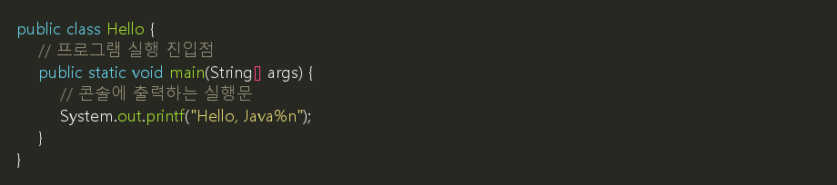
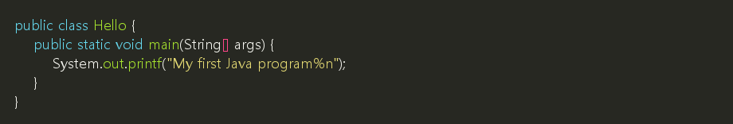
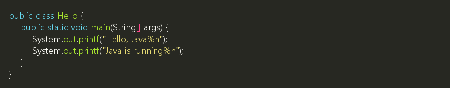
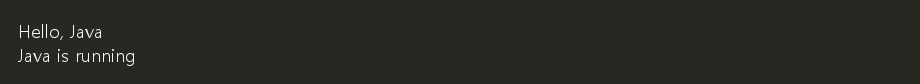

Java 프로그램을 처음 실행할 때는 보통 화면에 문장을 출력하는 예제부터 시작합니다. 이 예제에서는 Java 파일의 기본 모양과 실행 흐름을 먼저 확인합니다.
1. 시작 예제: Hello.java
파일 이름은 Hello.java로 저장합니다.

실행 결과:
2. 코드 살펴보기
| 코드 | 설명 |
|---|---|
public class Hello |
Hello라는 이름의 클래스를 만듭니다. Java 프로그램은 보통 클래스 안에 작성합니다. |
public static void main(String[] args) |
프로그램이 시작되는 위치입니다. Java가 이 부분부터 실행합니다. |
{ } |
코드의 범위를 나타냅니다. 클래스의 범위, 메소드의 범위를 구분할 때 사용합니다. |
System.out.printf("Hello, Java%n"); |
콘솔에 "Hello, Java"를 출력하고 줄을 바꿉니다. |
; |
하나의 실행문이 끝났다는 표시입니다. |
💡 참고: Java에서는 public class Hello처럼 공개 클래스 이름을 Hello로 만들면 파일 이름도 Hello.java로 맞추는 것이 기본 규칙입니다.
⚠️ 보안 참고: 이 교안에서는 출력할 때 println() 대신 printf()를 사용합니다. 값이 들어가는 출력문은 포맷 문자열을 고정하고, 변수 값은 %s, %d 같은 자리표시자에 넣는 습관을 들입니다.
3. 출력문 바꾸기
문장 안의 글자를 바꾸면 출력 결과도 바뀝니다.

실행 결과:
4. 여러 줄 출력하기
System.out.printf()에서 %n을 사용하면 줄을 바꾸어 출력할 수 있습니다.
💡 참고: printf()에서는 \n 대신 %n을 줄바꿈으로 사용할 수 있습니다.
| 표현 | 의미 |
|---|---|
\n |
줄바꿈 문자 자체를 의미합니다. |
%n |
현재 운영체제에 맞는 줄바꿈을 의미합니다. |
Windows, macOS, Linux는 줄바꿈을 처리하는 방식이 조금 다를 수 있습니다. 그래서 printf()를 사용할 때는 %n을 쓰는 편이 Java 코드에 더 잘 맞습니다.

실행 결과:

5. 연습
다음 문장이 출력되도록 Hello.java를 수정해 봅니다.
✅ 확인할 것:
- 파일 이름이
Hello.java인지 확인합니다. - 클래스 이름이
Hello인지 확인합니다. - 출력문 끝에 세미콜론(
;)이 있는지 확인합니다.
- teaching/materials/java/3-1_hello.md최종 수정일: 2026-09-17 02:29